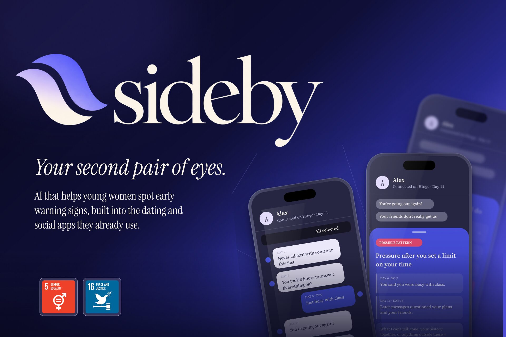

DUOLINGO POKER · CONCEPT PITCH FOR DUOLINGO · TEAM PROJECT
Duolingo Poker
Learn poker the Duolingo way. A beginner poker course taught by Tony, a dealer who has seen every hand there is.

- ROLE
- Character rationale for Tony · Presenter
- TIMELINE
- October 2026
- TEAM
- Team of 5
- SKILLS
- Character design thinking · Brand fit · Pitching
MY PART
- Developed the thinking behind Tony as an experienced, unbothered teacher
- Connected his personality to Lily, Duolingo’s most deadpan character
- Presented the character rationale in our pitch
02 · GOAL
A place to learn poker that isn’t selling it
Almost every place that teaches poker is also selling it. We wanted somewhere to learn the game first, with no money and no pressure.
Duolingo already fits: it’s where people go to learn something new, it’s structured, and when it added Chess in 2025, it showed that a game can sit next to languages and math.
03 · OUTCOME
A concept pitch and a working lesson
A new Duolingo character: an experienced dealer whose bored poker face is the joke and the credential.
A prototype that starts with matching suits and builds up, like a real Duolingo lesson.
A student concept, not a released Duolingo course.
04 · PROCESS
From a mascot to a teacher
-
1
Meet Tony
We wanted a character who would feel natural to learn poker from, so we made Tony an experienced player rather than a flashy mascot.
“He’s dealt millions of hands, seen just about every play there is, and at this point, nothing surprises him anymore.”
That’s why he looks so bored. His perfect poker face is the joke and the credential at the same time.
 Final tables23Bracelets1Royal flushes seen58Years at the table31Hands dealt1,904,271Showdowns read702,339Bluffs called48,318Tournaments dealt1,140Tells spotted211,921Hands played2,486,031Cards dealt43,798,189Shuffles5,712,812All-ins seen96,480
Final tables23Bracelets1Royal flushes seen58Years at the table31Hands dealt1,904,271Showdowns read702,339Bluffs called48,318Tournaments dealt1,140Tells spotted211,921Hands played2,486,031Cards dealt43,798,189Shuffles5,712,812All-ins seen96,480Tony’s backstory, told through his stats. -
2
Borrowing from Lily my part
Lily is one of Duolingo’s most popular characters, and what makes her funny is that she doesn’t seem to care about anything. We gave Tony some of that energy, so he keeps Duolingo’s humor while having his own personality and backstory.
The team also kept his palette, proportions, and shapes consistent with the Duolingo family, so he looks like he belongs there while still standing out.
-
3
Designing the lesson
Just like a real Duolingo lesson, it starts with the basics and builds up. You start by matching suits, with a breakdown of poker hands one tap away. Tony reacts to your picks, and if you get three right in a row, his reaction gets bigger. A wrong answer doesn’t just get marked wrong: the lesson shows why the right one is right.

Match the suits 
A wrong answer shows why
05 · TRY THE LESSON
Play the lesson
A playable recreation of our prototype, built from the screens in our pitch.
- Match the suits. Tap a card, then its suit.
- Spot the hand. Pick one, then check.
- Build a streak. Three right in a row and Tony actually reacts.
Wrong answers cost a heart, and show why the right one is right.

06 · TAKEAWAYS
What I’m taking with me
- Personality is part of the learning experience. Tony’s expression, backstory, and reactions had to support the lesson, not just make it look fun.
- Connect an instinct to a clear reason. Explaining Tony in a short pitch taught me to back a creative idea with why it works.
- Next: test it with real beginners. Does Tony’s humor actually help people understand poker and feel okay about making mistakes?
07 · THANKS FOR READING :)
More work
 EcoPinet Piloted · 2025
EcoPinet Piloted · 2025
Packaging made from pineapple waste, with seeds inside.

SideBy Concept · 2026A second pair of eyes for conversations that start to feel off.